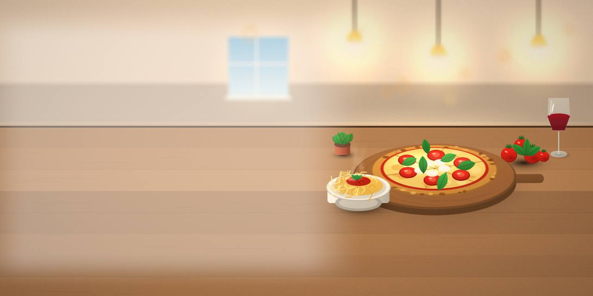
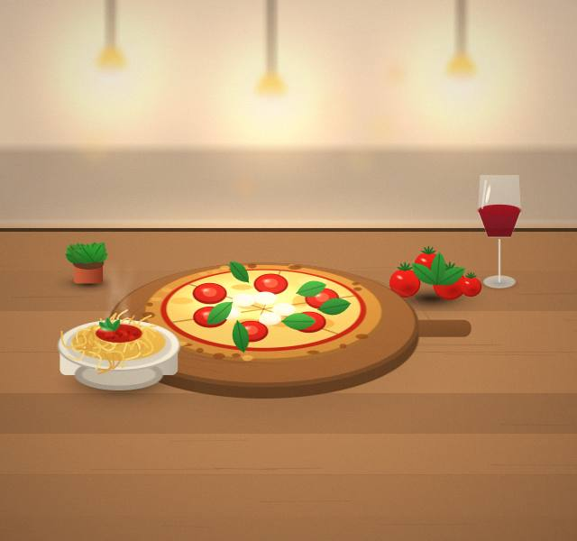
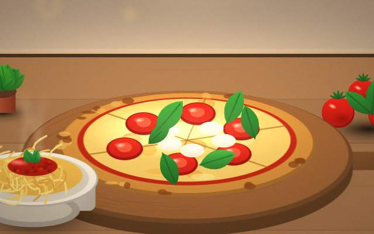
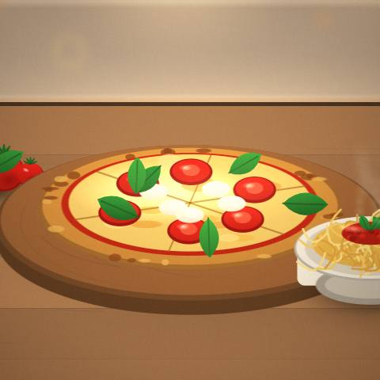
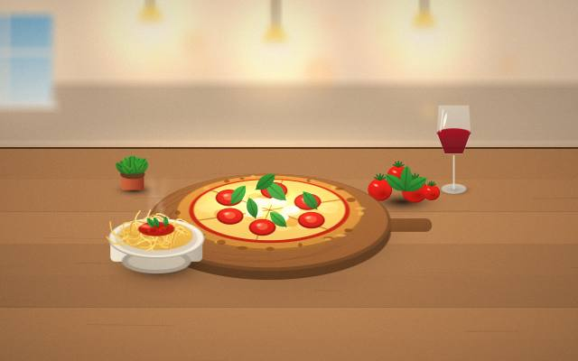
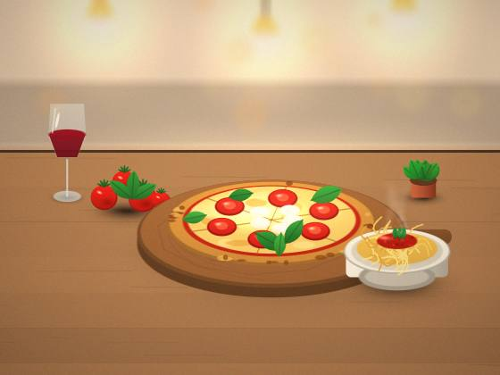

Wood-fired Pizza
Baked in a wood-fired oven, so the crust blisters and the edges char. Wood-fired pizza: ask for details before you decide.

Italian restaurant · Mumbai
Forno Rosso cooks fresh pasta and tiramisu in Mumbai, open 12pm to 11pm.

One focus: fresh pasta, tiramisu and wood-fired pizza in Mumbai. Small questions are welcome too.
In Mumbai: online booking. Send a short message and we will take it from there.
Baked in a wood-fired oven, so the crust blisters and the edges char. Wood-fired pizza: ask for details before you decide.
Bring your questions about fresh pasta.
Coffee-soaked sponge layered with mascarpone cream and cocoa. A good place to start if you like tiramisu.




Reserve a table online, and tell us how many are coming.
Start with wood-fired pizza or fresh pasta and build from there.
No rush; coffee is part of the meal.
Notes from everyday experience.
A few rules of thumb for sharing fresh pasta, tiramisu and the rest of the menu.
Replies are part of the service.
Booking online is available whenever it suits you.
We're open 12pm to 11pm.
Find us in Mumbai. Message us and we will send directions.
Send a message and you'll hear from us.
Ask about wood-fired pizza at the time of booking a table online.
Book a table online